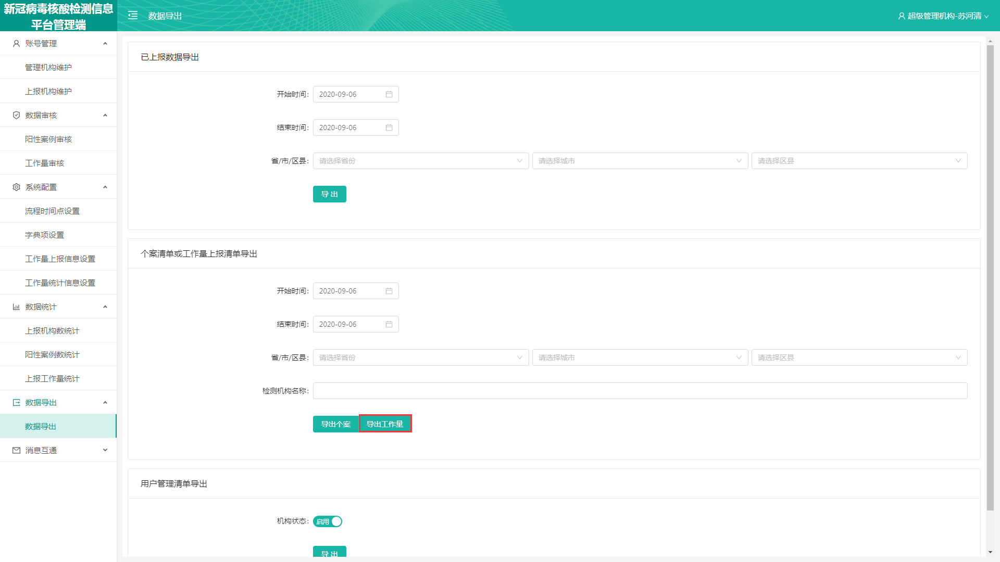

0
查看批注
查看批注
1.将本页面的“导出工作量”导出的表格换为附件中的表格“工作量导出表.xlsx”；注意！只需要将本页面的“导出工作量”做调整，原来给周总的那个数据导表页面不要调整，该导出什么表还是导出什么表；
2.“工作量导出表.xlsx”明确以下2点：
2.1导出的工作量表中，字段显示的是新冠2.0系统中设置的工作量上报字段，添加、修改、删除工作量上报字段，那么导出的工作量表中字段同步更新显示；
2.2当存在不需要填写的字段时，该字段以“-”在表格中显示；
0